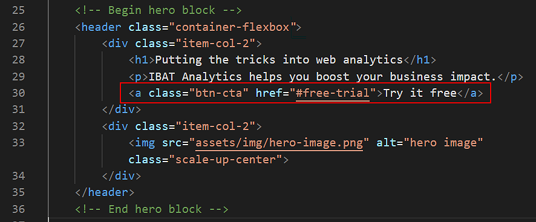
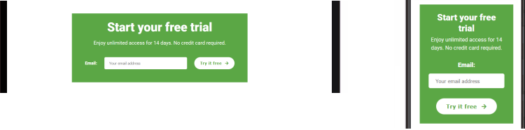

Introduction
In this task you will use template content to add an Email Sign-up Form to the single-web page 'Software Analytics' project you created earlier.
You can display a finished version of the project web page by clicking the image below.

In this task you will use template content to add an Email Sign-up Form to the single-web page 'Software Analytics' project you created earlier.
You can display a finished version of the project web page by clicking the image below.
At the end of this Tutorial you will be able to:
Working with your two HTML files
Adding the <head> link for the Font Awesome icons
Copying-and-pasting the form HTML
Working with your two CSS files
Copying-and-pasting the form CSS
Adding a button to the hero block
Editing the form content and email address
If you have not already downloaded the HTML, CSS and image template files for use with this and your other projects, you can find the instructions at the link below.
You will begin by working with two HTML files:
If you have any other files open in Visual Studio, you may wish to close them.

This will help you to focus only on the two HTML files you will be working with.
Your Sign-up Form will use a Font Awesome 5 icon. So too will a new button-styled hyperlink in the ‘hero’ section of your web page that will link to the Email Sign-up Form.
You need to include a link to the Font Awesome stylesheet CSS file.
<!-- Link to icons for Font Awesome 5 --> <link href="https://cdnjs.cloudflare.com/ajax/libs/font-awesome/5.14.0/css/all.min.css" rel="stylesheet" integrity="sha512-1PKOgIY59xJ8Co8+NE6FZ+LOAZKjy+KY8iq0G4B3CyeY6wYHN3yt9PW0XpSriVlkMXe40PTKnXrLnZ9+fkDaog==" crossorigin="anonymous">The pasted comment and Font Awesome link should now look as follows.
Your next step is to copy content from the template file into your index.html web page.


You can now close the email-signup-form-template.html file.
Your next task is to work with two CSS files:
If you have any other files open in Visual Studio, you may wish to close them.

This will help you to focus only on the two CSS files you will be working with.
Your next step is to copy content from CSS template file into your style.css web page.

You can now close the email-sign-up-form-template.css file.
In your web browser, the Email Sign-up Form should now look as shown below.

In your next two steps you will update the content and HTML of your index.html web page.
You will begin by adding a button-styled hyperlink to the ‘hero’ block at the top of the web page that, when clicked/tapped, will take to the user to the Email Sign-up Form at the bottom of the same page. Here are the steps.
<a class="btn-cta" href="#free-trial">Try it free</a>The ‘hero’ block of your web page should now look as shown below. 

You will now edit the content of the Email Sign-up Form
<h3>Start your free trial</h3> <p>Enjoy unlimited access for 14 days. No credit card required.</p>
<button id="btn-submit" type="submit" class="btn-submit">Try it free <i class="fas fa-arrow-right"></i></button>

In your web browser, the Email Sign-up Form should now look as shown below.

Now you will update the stylesheet for your web page.
/* == CTA button == */ .container-flexbox a.btn-cta { display: inline-block; text-decoration: none; padding: 12px 42px; border-style: solid; border-width: 4px; margin: 32px 0; border-radius: 50px; font-size: 18px; font-weight: bold; text-transform: uppercase; letter-spacing: 1px; } .container-flexbox a.btn-cta:link, .container-flexbox a.btn-cta:visited { color: #5ba745; background-color: #fff; border-color: #5ba745 } .container-flexbox a.btn-cta:hover, .container-flexbox a.btn-cta:active { color: #fff; background-color: #5ba745; border-color: #5ba745 }
 Also, change the colour of the 'Email' label to white and add a new font-size.
Also, change the colour of the 'Email' label to white and add a new font-size.

#email-signup-form #btn-submit { color: #fff; border: solid 2px #fff; padding: 12px 22px; background-color: #fff; letter-spacing: 1px; border-radius: 50px; color: #5ba745; } #email-signup-form #btn-submit:focus, #email-signup-form #btn-submit:hover { color: #fff; background-color: #5ba745; border: solid 2px #fff }
View your web page in a browser on desktop/laptop and mobile size screens. The Call-to-Action button should look as below.

And the Email Sign Up form should look as below.
When you click/tap the “TRY IT FREE” button in the hero block, you can see that the page immediately ‘jumps’ to the Email Sign-up Form at the bottom of the web page.
You can add a so-called smooth scrolling effect to your Call-To-Action button as follows.
html { scroll-behavior: smooth }The complete web browser resets should now look as shown below.

View the result in your web browser for both desktop and mobile screen sizes by clicking/tapping the Call-To-Action button.
Note that this smooth-scrolling effect is not supported by the Apple Safari web browser. It should work in the Google Chrome, Mozilla Firefox, Microsoft Edge and Opera web browsers.
You can display a finished version of this project on GitHub by clicking the image below.
The final step is to upload your project to GitHub.
All the files you have updated for this project are in the software sub-folder of your websites/portfolio folder.
So the easiest option is simply to upload the entire software sub-folder to your account on GitHub.


Your updated ‘Software Analytics’ project web page is now published on GitHub at a web address similar to the following, where username is the username you have chosen for your GitHub account:
https://username.github.io/portfolio/software/index.html
or, simply:
https://username.github.io/portfolio/software
It may take a few minutes for your uploaded files to appear on GitHub.
Return to Contents.